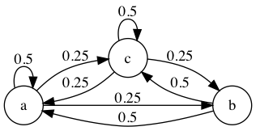

2 Module behavior/markov-chain
| (require behavior/markov-chain) | package: behavior |
This module provides an implementation for (discrete-time, classic) Markov chains, these can be used to create the underlying event stream, with specific distributions, for higher-level behaviors, or for direct simulation. It also separates the definition of a mkchain from an execution instance so that the definition may be reused across multiple executions. Individual states are represented as symbols, the chain is represented as a matrix, with a row representing transition sources and columns representing the transition target. Probabilities are represented as real numbers from 0.0 to 1.0 and all probabilities in a row must add up to either 0.0 or 1.0.
As defined by Wikipedia; A Markov chain is "a stochastic model describing a sequence of possible events in which the probability of each event depends only on the state attained in the previous event".
> (define a-chain (make-chain 'example (==> 'a (--> 'a 0.5) (--> 'b 0.25) (--> 'c 0.25)) (==> 'b (--> 'a 0.5) (--> 'c 0.5)) (==> 'c (--> 'a 0.25) (--> 'b 0.25) (--> 'c 0.5)))) > (define an-exec (make-chain-execution a-chain 'b)) > (execute an-exec 10) execute: undefined;
cannot reference an identifier before its definition
in module: top-level
> (displayln (execution-trace an-exec)) execution-trace: undefined;
cannot reference an identifier before its definition
in module: top-level
> (displayln (mkchain->graph-string a-chain))
digraph markov_chain {
rankdir = LR;
size = "8,5";
node [shape = circle];
c -> c [label = "0.5"];
c -> a [label = "0.25"];
c -> b [label = "0.25"];
a -> c [label = "0.25"];
a -> a [label = "0.5"];
a -> b [label = "0.25"];
b -> c [label = "0.5"];
b -> a [label = "0.5"];
}
The execution-trace function returns the history of the execution as a list of states the execution has been in. The list is ordered from most recent to last; this trace is not a memory, the implementation is still a classic Markov chain.
2.1 Types and Predicates
struct
name : symbol?
struct
(struct chain-execution (model state complete?))
model : symbol? state : symbol? complete? : boolean?
struct
(struct chain-history-event history-event (current-execution state))
current-execution : chain-execution? state : symbol?
contract
2.2 Construction
procedure
(make-chain name pair ...+) → (or/c #f mkchain?)
name : symbol? pair : (pairof symbol? mkchain-row?)
> (make-chain 'example (==> 'a (--> 'a 0.3) (--> 'b 0.7)) (==> 'b (--> 'b 0.7) (--> 'c 0.3)) (==>! 'c)) #<mkchain>
This function will return #f if any of the provided pairs are invalid.
procedure
(make-diagonal-chain name state ...+) → mkchain?
name : symbol? state : symbol?
procedure
(row-ref chain from-state) → mkchain-row?
chain : mkchain? from-state : symbol?
procedure
chain : mkchain? state : symbol? row : mkchain-row?
procedure
(mkchain-states chain) → (listof string?)
chain : mkchain?
2.3 Execution
An execution takes place according to discrete steps. At each step the set of transitions from the current state (see execution-state) and chooses a single transition based on the probabilities for each. Once chosen the to state is made current and the step is complete.
If the current state is an absorbing state (see >--<?) then the execution is said to be complete (see execution-complete?) and any further calls to either execute or execute-next will have no effect.
procedure
(make-chain-execution from-chain start-state [ reporter]) → (or/c #f execution?) from-chain : mkchain? start-state : symbol? reporter : mkchain-reporter? = #f
When reporter is specified the provided function is called with the new state each time one is selected. As the execution is not responsible for tracking the history of the chosen states, the value of the function execution-trace is simply the current state.
Otherwise, all states are recorded and can be retrieved by the execution-trace function.
This function will return #f if start-state is not a state within the chain from-chain.
procedure
(make-chain-execution-generator from-chain start-state) → (or/c #f generator?) from-chain : mkchain? start-state : symbol?
> (define d-chain (make-chain (==> 'a (--> 'b 1.0)) (==> 'b (--> 'c 1.0)) (==>! 'c))) make-chain: contract violation
expected: symbol?
given: '(a . #hash((b . 1.0)))
in: the 1st argument of
(->*
(symbol?)
#:rest
(listof pair?)
(or/c #f mkchain?))
contract from:
<pkgs>/behavior/behavior/markov-chain.rkt
blaming: top-level
(assuming the contract is correct)
at: <pkgs>/behavior/behavior/markov-chain.rkt:20:3
> (define next (make-chain-execution-generator d-chain 'a)) d-chain: undefined;
cannot reference an identifier before its definition
in module: top-level
> (for ([state (in-producer next #f)]) (displayln state)) next: undefined;
cannot reference an identifier before its definition
in module: top-level
This function will return #f if start-state is not a state within the chain from-chain.
procedure
(execute-chain exec steps) → execution?
exec : execution? steps : exact-positive-integer?
procedure
(execute-chain-step exec) → execution?
exec : execution?
procedure
(execution-chain-state exec) → symbol?
exec : execution?
procedure
(execution-chain-complete? exec) → boolean?
exec : execution?
2.4 GraphViz
It can be very useful to view a Markov chain as a state transition diagram and the following functions provide this capability by writing the DOT file format used by Graphviz for visualization.
Given the example in this module’s introduction, running the resulting DOT text through dot -T png a-chain.dot > a-chain-graph.png results in the following image.

procedure
(mkchain->graph chain out) → void?
chain : mkchain? out : port?
procedure
(mkchain->graph-string chain) → string?
chain : mkchain?